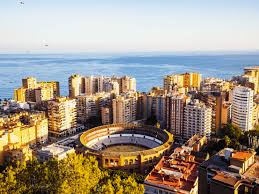
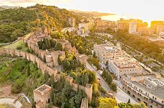

Malaga – Endülüs’ün Gözde Liman Şehri
Tarihçe
Malaga, İspanya’nın güneyinde, Endülüs bölgesinde yer alan bir liman şehridir. M.Ö. 770 civarında Fenikeliler tarafından kurulmuş, ardından Romalılar, Vizigotlar ve Müslümanlar şehri yönetmiştir. 1487’de Katolik Krallık tarafından fethedilmiş ve Endülüs’ün önemli liman şehirlerinden biri hâline gelmiştir. Pablo Picasso’nun doğum yeri olması da şehre ayrı bir kültürel değer katmıştır.

Gezilecek Yerler
Malaga’da mutlaka görülmesi gereken başlıca yerler:
- Alcazaba: Müslümanlardan kalan bir kale; tarihi mimarisi ve manzarasıyla büyüleyicidir.
- Malaga Katedrali: Endülüs’ün en etkileyici katedrallerinden biri, Gotik ve Rönesans tarzlarının birleşimi ile dikkat çeker.
- Gibralfaro Kalesi: Şehrin panoramik manzaralarını görmek için ideal bir nokta.
- Pablo Picasso Müzesi: Malaga doğumlu ünlü ressamın eserlerini görebileceğiniz kültürel bir merkez.
- Plajlar (La Malagueta ve Pedregalejo): Şehrin popüler plajları; deniz, güneş ve sahil restoranları ile ünlüdür.

Yemek Kültürü
Malaga’nın mutfağı Akdeniz lezzetleri ve Endülüs geleneklerini bir araya getirir:
- Espetos de Sardinas: Barbeküde pişirilen sardalya balıkları, özellikle sahil restoranlarında sunulur.
- Porra Antequerana: Soğuk domates çorbası; gazpacho’ya benzeyen yerel bir tariftir.
- Ajoblanco: Badem ve sarımsak ile yapılan soğuk çorba, yaz aylarında tercih edilir.
- Fritura Malagueña: Karides, kalamar ve balıkların kızartıldığı deniz ürünleri tabağı.
- Bienmesabe: Tatlı bademli krema; Malaga’ya özgü geleneksel bir lezzettir.